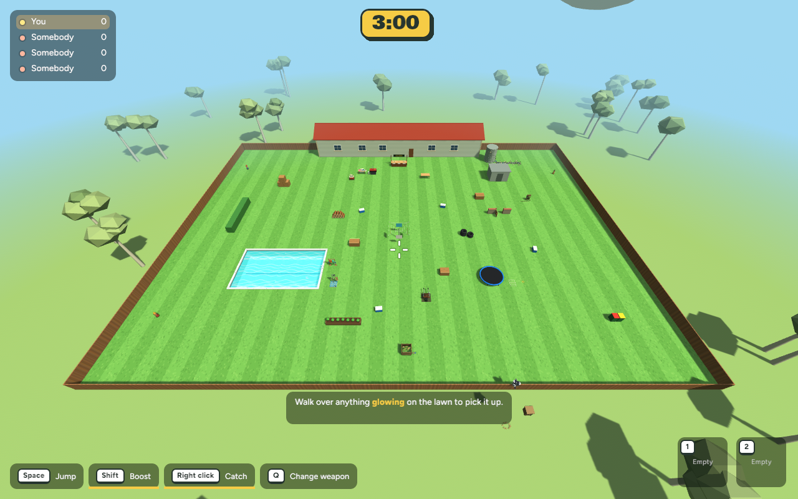
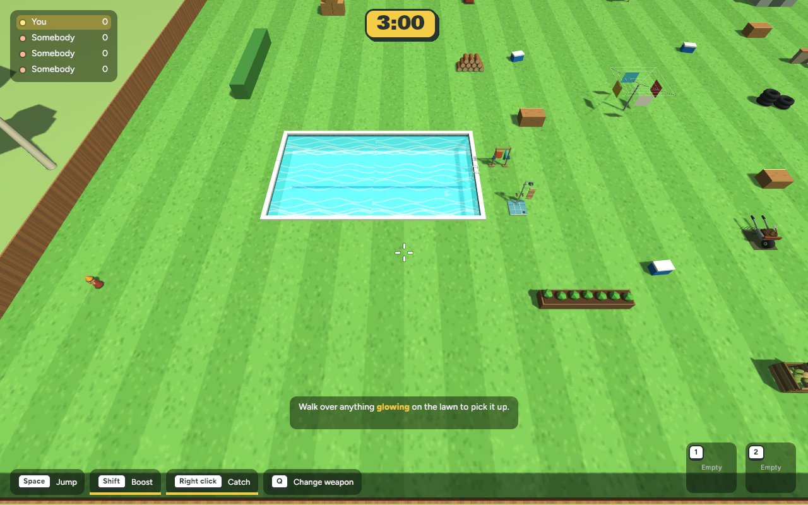
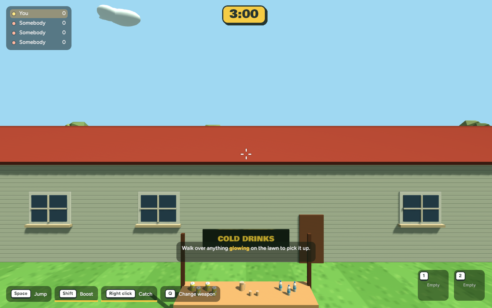
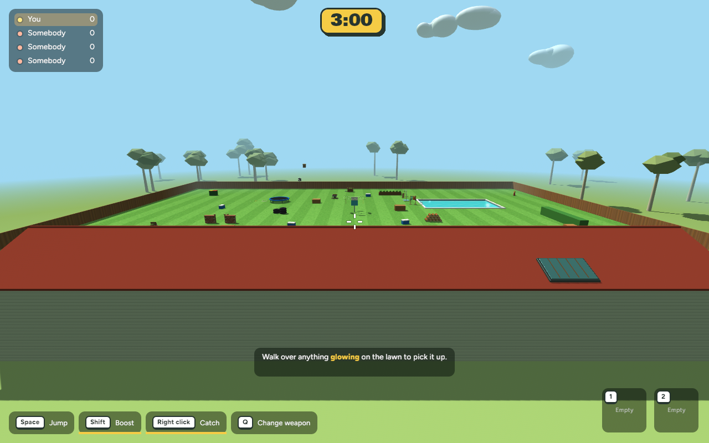

Backyard finishing pass
Native Rust game captures: the full yard, poolside props, house facade, and the walkable rear roof with its solar hot-water collector.
The local browser preview is disabled in this session. The browser script syntax check passed; these captures are from the Rust build.

Overall backyard view

Poolside and nearby yard props

House facade with weatherboards, windows and porch details

Rear roof slope and solar hot-water collector